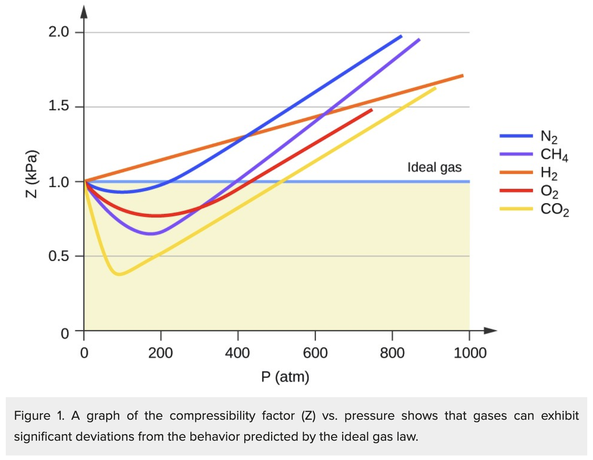
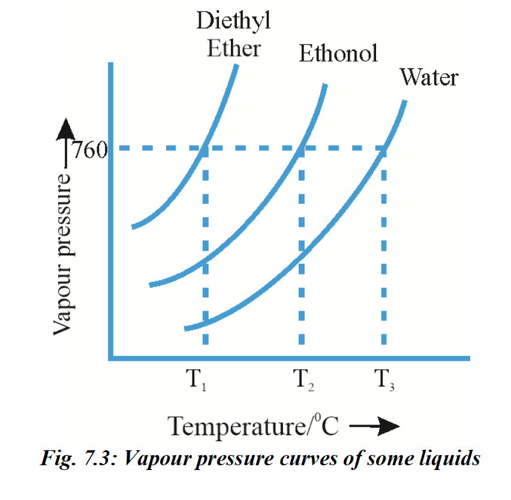

Use \(pV=nRT\) as the central equation for gas-law numericals. For
a fixed amount of gas, \(\dfrac{pV}{T}=\text{constant}\).
Always convert temperature to kelvin before using gas equations:
\(T(\text{K})=t(^\circ\text{C})+273\).
For a gas at fixed \(T\) and \(V\), pressure is proportional to
number of moles: \(p\propto n\). If gases are added to a fixed
vessel, total pressure is the sum of individual partial pressures.
For mass-based questions, use \(n=\dfrac{w}{M}\), so at fixed
\(T,V\), \(p\propto \dfrac{w}{M}\).
For same gas in two containers, \(w\propto \dfrac{pV}{T}\). This
is useful when pressure, volume and temperature are all compared
by ratios.
For a graph of \(V\) vs \(n\), \(V=\dfrac{RT}{p}n\), so slope
\(=\dfrac{RT}{p}\). At \(300\,\text{K}\) and \(1\,\text{atm}\),
slope \(\approx 24.6\,\text{L mol}^{-1}\).
For an isobar on a \(V\)-\(T\) graph, \(V=\dfrac{nR}{p}T\), so
slope \(=\dfrac{nR}{p}\). Hence lower pressure gives a steeper
line: if \(p_1 \lt p_2 \lt p_3\), then \(m_1 \gt m_2 \gt m_3\).
Gas Mixtures and Dalton’s Law
Dalton’s law: total pressure of a non-reacting gas mixture is the
sum of partial pressures, \(p_{\text{total}}=p_1+p_2+p_3+\cdots\).
Partial pressure is given by \(p_i=x_i p_{\text{total}}\), where
\(x_i=\dfrac{n_i}{n_{\text{total}}}\).
For gases mixed from separate vessels at the same temperature,
each gas finally occupies the total volume. Quick formula:
\(p_i=\dfrac{P_iV_i}{V_{\text{total}}}\).
For mole fraction in gas mixtures, first compare moles using
\(n=\dfrac{pV}{RT}\). If \(T\) is same, mole fraction depends on
initial \(pV\) values.
Average molar mass of a gas mixture is mole-fraction weighted:
\(M_{\text{avg}}=x_1M_1+x_2M_2+\cdots\).
For density of a gas mixture, use \(M=\dfrac{dRT}{p}\), then
connect this average molar mass to composition.
When gas-mixture density gives average molar mass, first find mole
fraction from \(M_{\text{avg}}=x_1M_1+x_2M_2+\cdots\). If mass
percentage is asked, convert mole fraction to mass contribution:
\(\text{mass \% of
A}=\dfrac{x_AM_A}{x_AM_A+x_BM_B+\cdots}\times100\).
For pressure of a gas mixture from given masses, convert each gas
to moles using \(n=\dfrac{w}{M}\), add them, and use
\(pV=n_{\text{total}}RT\).
Open Vessel Heating
In an open vessel, pressure and volume remain constant, so from
\(pV=nRT\), the amount of gas remaining is inversely proportional
to temperature: \(n\propto \dfrac{1}{T}\).
Fraction of gas remaining after heating in an open vessel is
\(\dfrac{n_2}{n_1}=\dfrac{T_1}{T_2}\).
For example, heating from \(27^\circ\text{C}\) to
\(727^\circ\text{C}\) means \(300\,\text{K}\) to
\(1000\,\text{K}\), so fraction remaining
\(=\dfrac{300}{1000}=\dfrac{3}{10}\).
Molecular Speeds and Kinetic Energy
Root mean square speed: \(v_{\text{rms}}=\sqrt{\dfrac{3RT}{M}}\).
For comparison, \(v_{\text{rms}}\propto \sqrt{\dfrac{T}{M}}\).
Most probable speed: \(v_{\text{mp}}=\sqrt{\dfrac{2RT}{M}}\). When
equating \(v_{\text{rms}}\) of one gas with \(v_{\text{mp}}\) of
another, square both sides and cancel \(R\).
Speed ratios must be squared before comparing \(\dfrac{T}{M}\). Do
not compare molar masses directly with speed ratios.
For one mole of gas, kinetic energy can be written as
\(E=\dfrac{1}{2}Mv_{\text{rms}}^2\), where \(M\) must be in
\(\text{kg mol}^{-1}\).
Unit conversion is critical: \(40\,\text{g
mol}^{-1}=0.040\,\text{kg mol}^{-1}\). Missing this changes the
answer by a factor of \(1000\).
Graham’s Law of Diffusion
At the same pressure and temperature, rate of diffusion is
inversely proportional to square root of molar mass: \(r\propto
\dfrac{1}{\sqrt{M}}\).
For two gases, \(\dfrac{r_A}{r_B}=\sqrt{\dfrac{M_B}{M_A}}\).
For equal volumes diffused, rate is inversely proportional to
time, so \(\dfrac{t_A}{t_B}=\sqrt{\dfrac{M_A}{M_B}}\).
If pressure differs, use the extended comparison \(r\propto
\dfrac{p}{\sqrt{M}}\), unless the given textbook solution clearly
ignores pressure and applies the simpler Graham’s law form.
Common exam move: if a gas diffuses \(\sqrt{5}\) times as fast as
another, square the relation before solving molar mass.
Kinetic Molecular Theory and Real Gas Deviation
Kinetic molecular theory assumes gas molecules are point
particles, molecular volume is negligible, intermolecular forces
are absent, and collisions are perfectly elastic.
Gas pressure arises due to collisions of gas molecules with
container walls.
Different gas molecules do not have the same speed at a given
instant; speed distribution exists, but average kinetic energy
depends only on temperature.
Real gases deviate from ideal behaviour at high pressure because
molecules are close together and their finite volume and
intermolecular attractions become significant.
Real gases approach ideal behaviour at low pressure and high
temperature.
Compressibility Factor and van der Waals Equation
Compressibility factor: \(Z=\dfrac{pV}{nRT}\). For ideal gas,
\(Z=1\).
For real gases, \(Z\lt1\) at moderate pressure when attractive
forces dominate; \(Z\gt1\) at high pressure when finite molecular
volume/repulsion dominates.
Stronger intermolecular attraction gives a deeper dip below
\(Z=1\). Hence gases like \(\text{CO}_2\) and \(\text{NH}_3\) show
lower \(Z\) than weakly attracting gases like \(\text{N}_2\).
van der Waals equation for one mole:
\(\left(p+\dfrac{a}{V^2}\right)(V-b)=RT\). Here \(a\) measures
intermolecular attraction and \(b\) represents excluded volume.
At very high pressure, attraction correction can often be
neglected and volume correction dominates: \(p(V-b)=RT\), so
\(V=\dfrac{RT}{p}+b\).
At high pressure, \(Z=1+\dfrac{pb}{RT}\), so \(Z\gt1\).
Greater \(a\) means stronger attraction. Among common gases,
\(\text{NH}_3\) has high \(a\) due to strong intermolecular
attraction/hydrogen bonding.

Liquid State and Viscosity
Viscosity is resistance to flow. Liquids with stronger
intermolecular forces generally have higher viscosity.
Newton’s law of viscosity: \(F=\eta A\dfrac{du}{dz}\), where
\(\eta\) is coefficient of viscosity, \(A\) is area of contact,
and \(\dfrac{du}{dz}\) is velocity gradient.
The force required for steady liquid flow is directly proportional
to area of contact and velocity gradient.
Gas Volumes and Combustion Stoichiometry
At the same temperature and pressure, gaseous volumes are
proportional to mole ratios.
For hydrocarbon combustion:
\(C_xH_y+\left(x+\dfrac{y}{4}\right)O_2\rightarrow
xCO_2+\dfrac{y}{2}H_2O\)
If volume ratio hydrocarbon : \(\text{CO}_2\) : \(\text{H}_2O\) is
\(1:x:\dfrac{y}{2}\), then directly identify \(x\) from
\(\text{CO}_2\) and \(y\) from water vapour.
Example pattern: ratio \(1:4:5\) gives \(x=4\),
\(\dfrac{y}{2}=5\), hence \(C_4H_{10}\).
Common Pitfalls
Never use Celsius temperature in gas-law calculations; always
convert to kelvin.
After opening connected vessels, each gas occupies total volume,
not its original vessel volume.
For gas-mixture mole fraction, compare moles first using
\(\dfrac{pV}{RT}\); do not blindly use final volume.
In RMS speed questions, square speed ratios before using molar
mass and temperature.
In kinetic energy per mole questions, convert molar mass from
\(\text{g mol}^{-1}\) to \(\text{kg mol}^{-1}\).
For diffusion time questions, equal volume means time is inversely
related to rate.
For real gases, \(Z\lt1\) indicates attractions dominate;
\(Z\gt1\) indicates repulsions/finite volume dominate.
The physical state of a substance depends mainly on the balance
between intermolecular forces and thermal energy. Intermolecular
forces keep particles together, while thermal energy tends to
separate them by increasing molecular motion.
If intermolecular forces dominate over thermal energy, particles
remain close together and the substance tends to exist as liquid
or solid. If thermal energy dominates, particles move far apart
and the substance tends to exist as gas.
The common order of intermolecular separation is: \(\text{solid}
\lt \text{liquid} \lt \text{gas}\). Hence gases are highly
compressible, liquids are almost incompressible, and solids are
nearly incompressible.
Important intermolecular forces include ion-dipole, dipole-dipole,
dipole-induced dipole, London dispersion forces and hydrogen
bonding. Stronger intermolecular forces generally increase boiling
point, viscosity and surface tension.
The Gaseous State and Gas Variables
In gases, intermolecular distances are large and intermolecular
forces are very weak. Therefore gases have no fixed shape, no
fixed volume, low density and high compressibility.
The behaviour of a gas is described using four variables: pressure
\(p\), volume \(V\), temperature \(T\) and amount of gas \(n\). In
gas law numericals, temperature must always be used in kelvin:
\(T(\text{K})=t(^\circ\text{C})+273\).
Pressure is produced by collisions of gas molecules with the walls
of the container. If temperature and volume are fixed, pressure is
directly proportional to the number of moles: \(p\propto n\).
Gas Laws
Boyle’s law: for a fixed amount of gas at constant temperature,
volume is inversely proportional to pressure:
\(V\propto\dfrac{1}{p}\), so \(pV=\text{constant}\) and
\(p_1V_1=p_2V_2\).
For Boyle’s law graphs, \(p\) vs \(V\) is a rectangular hyperbola,
\(p\) vs \(\dfrac{1}{V}\) is a straight line, and \(pV\) vs \(p\)
is parallel to the pressure axis because \(pV\) remains constant.
Charles’ law: for a fixed amount of gas at constant pressure,
volume is directly proportional to absolute temperature:
\(V\propto T\), so \(\dfrac{V_1}{T_1}=\dfrac{V_2}{T_2}\).
On a \(V\)-\(T\) graph at constant pressure, the line is straight.
For one mole, \(V=\dfrac{R}{p}T\); for \(n\) moles,
\(V=\dfrac{nR}{p}T\). Hence slope \(=\dfrac{nR}{p}\), so lower
pressure gives a steeper isobar.
Pressure-temperature law: for a fixed amount of gas at constant
volume, pressure is directly proportional to absolute temperature:
\(p\propto T\), so \(\dfrac{p_1}{T_1}=\dfrac{p_2}{T_2}\).
Avogadro’s law: at the same temperature and pressure, equal
volumes of gases contain equal number of molecules. Therefore
\(V\propto n\) and \(\dfrac{V_1}{n_1}=\dfrac{V_2}{n_2}\).
At the same temperature and pressure, gaseous volumes are
proportional to mole ratios. This is useful in gaseous reaction
and combustion questions.
Ideal Gas Equation and Applications
Combining Boyle’s law, Charles’ law and Avogadro’s law gives the
ideal gas equation: \(pV=nRT\), where \(R\) is the universal gas
constant.
Common values of \(R\) are \(0.0821\,\text{L atm
mol}^{-1}\text{K}^{-1}\), \(8.314\,\text{J
mol}^{-1}\text{K}^{-1}\), and \(1.987\,\text{cal
mol}^{-1}\text{K}^{-1}\). Choose \(R\) according to the
pressure-volume units used.
For a fixed amount of gas, the combined gas law is:
\(\dfrac{p_1V_1}{T_1}=\dfrac{p_2V_2}{T_2}\). This is used when
pressure, volume and temperature all change.
For mass-based questions, use \(n=\dfrac{w}{M}\). Therefore, at
fixed temperature and volume, \(p\propto\dfrac{w}{M}\).
For the same gas in two containers, \(w\propto\dfrac{pV}{T}\).
This allows direct comparison of masses when pressure, volume and
temperature are given as ratios.
For a graph of \(V\) vs \(n\), \(V=\dfrac{RT}{p}n\). Thus slope
\(=\dfrac{RT}{p}\). At \(300\,\text{K}\) and \(1\,\text{atm}\),
the slope is approximately \(24.6\,\text{L mol}^{-1}\).
In an open vessel, pressure and volume remain constant. From
\(pV=nRT\), \(n\propto\dfrac{1}{T}\). Hence fraction of gas
remaining after heating is \(\dfrac{n_2}{n_1}=\dfrac{T_1}{T_2}\).
Dalton’s Law of Partial Pressures
Dalton’s law applies to mixtures of non-reacting gases. The total
pressure of the mixture is the sum of the partial pressures:
\(p_{\text{total}}=p_1+p_2+p_3+\cdots\).
The partial pressure of a gas is the pressure it would exert if it
alone occupied the whole container at the same temperature.
For a gas mixture, \(p_i=x_i p_{\text{total}}\), where
\(x_i=\dfrac{n_i}{n_{\text{total}}}\). Thus mole fraction directly
decides partial pressure.
When gases from separate vessels are mixed at the same
temperature, each gas finally occupies the total volume. A quick
formula is: \(p_i=\dfrac{P_iV_i}{V_{\text{total}}}\).
For mole fraction in gas mixtures, compare moles using
\(n=\dfrac{pV}{RT}\). If temperature is the same for all gases,
mole fraction depends on initial \(pV\) values.
Average molar mass of a gas mixture is mole-fraction weighted:
\(M_{\text{avg}}=x_1M_1+x_2M_2+\cdots\). For density-based mixture
questions, first use \(M=\dfrac{dRT}{p}\), then connect
\(M_{\text{avg}}\) to composition.
If mass percentage is asked after finding mole fraction, convert
mole fraction into mass contribution: \(\text{mass \% of
A}=\dfrac{x_AM_A}{x_AM_A+x_BM_B+\cdots}\times100\).
For pressure of a gas mixture from given masses, convert each gas
to moles using \(n=\dfrac{w}{M}\), add the moles, and apply
\(pV=n_{\text{total}}RT\).
Graham’s Law of Diffusion
Diffusion is the mixing of gases due to random molecular motion.
Effusion is the escape of gas through a very small opening.
At constant temperature and pressure, rate of diffusion is
inversely proportional to the square root of density:
\(r\propto\dfrac{1}{\sqrt{\rho}}\).
For gases at the same temperature and pressure, density is
proportional to molar mass. Therefore,
\(r\propto\dfrac{1}{\sqrt{M}}\) and
\(\dfrac{r_A}{r_B}=\sqrt{\dfrac{M_B}{M_A}}\).
For equal volumes diffused, rate is inversely proportional to
time. Therefore, \(\dfrac{t_A}{t_B}=\sqrt{\dfrac{M_A}{M_B}}\).
If pressure differs and the comparison requires pressure
correction, use \(r\propto\dfrac{p}{\sqrt{M}}\). In many basic
textbook-style questions, the simpler same-pressure form is used.
When a rate ratio contains a square root, square both sides before
solving molar mass. For example, if one gas diffuses \(\sqrt{5}\)
times as fast as another, the molar-mass ratio involves \(5\), not
\(\sqrt{5}\).
Kinetic Molecular Theory and Kinetic Gas Equation
Kinetic molecular theory treats gases as a large number of tiny
particles in constant, rapid and random motion.
The main assumptions are: molecular volume is negligible compared
to container volume, intermolecular forces are absent, collisions
are perfectly elastic, and pressure is due to molecular collisions
with container walls.
The average kinetic energy of gas molecules is directly
proportional to absolute temperature. Therefore, temperature
controls molecular kinetic energy, not the identity of the gas.
The kinetic gas equation is \(pV=\dfrac{1}{3}mNC^2\), where \(m\)
is the mass of one molecule, \(N\) is the number of molecules and
\(C\) is the root mean square velocity.
From the kinetic gas equation, Boyle’s law follows because at
constant temperature the average kinetic energy remains constant,
so \(pV\) is constant.
Charles’ law follows because at constant pressure, volume is
directly proportional to absolute temperature. Avogadro’s law
follows because equal volumes at the same temperature and pressure
contain equal number of molecules.
Dalton’s law follows because each gas in a non-reacting mixture
contributes independently to the total pressure through its own
molecular collisions.
Molecular Speeds and Kinetic Energy
Gas molecules do not all move with the same speed. At a given
temperature, they show a distribution of molecular speeds.
The three important speeds are most probable speed
\(v_{\text{mp}}\), average speed \(v_{\text{av}}\), and root mean
square speed \(v_{\text{rms}}\).
Most probable speed is the speed possessed by the maximum number
of molecules: \(v_{\text{mp}}=\sqrt{\dfrac{2RT}{M}}\).
Average speed is the arithmetic mean of molecular speeds:
\(v_{\text{av}}=\sqrt{\dfrac{8RT}{\pi M}}\).
Root mean square speed is:
\(v_{\text{rms}}=\sqrt{\dfrac{3RT}{M}}\). For comparison
questions, \(v_{\text{rms}}\propto\sqrt{\dfrac{T}{M}}\).
At the same temperature, the order is \(v_{\text{rms}}\gt
v_{\text{av}}\gt v_{\text{mp}}\). Lighter gases move faster than
heavier gases because speed varies inversely with \(\sqrt{M}\).
When comparing speeds, square the speed ratio before comparing
\(\dfrac{T}{M}\). This avoids the common mistake of comparing
molar masses directly with unsquared speed ratios.
For one mole of gas, kinetic energy can be written as
\(E=\dfrac{1}{2}Mv_{\text{rms}}^2\), where \(M\) must be in
\(\text{kg mol}^{-1}\). Thus \(40\,\text{g mol}^{-1}\) must be
converted to \(0.040\,\text{kg mol}^{-1}\) before using SI units.
Real Gases and Compressibility Factor
Ideal gas behaviour assumes negligible molecular volume and
absence of intermolecular forces. Real gases deviate because these
assumptions fail, especially at high pressure and low temperature.
At high pressure, gas molecules are close together, so molecular
volume and intermolecular attractions become significant. At low
temperature, molecules move more slowly, so attractions become
more effective.
Real gases approach ideal behaviour at low pressure and high
temperature because molecules are far apart and intermolecular
forces become less significant.
Compressibility factor is \(Z=\dfrac{pV}{nRT}\). For an ideal gas,
\(Z=1\).
For real gases, \(Z\lt1\) means attractive forces dominate and the
observed volume is less than ideal. \(Z\gt1\) means repulsive or
finite-volume effects dominate and the observed volume is greater
than ideal.
Stronger intermolecular attraction gives a deeper dip below
\(Z=1\). Thus gases such as \(\text{CO}_2\) and \(\text{NH}_3\)
generally show greater negative deviation than weakly attracting
gases such as \(\text{N}_2\).
van der Waals Equation and Liquefaction
van der Waals corrected the ideal gas equation by accounting for
intermolecular attraction and finite molecular volume.
For \(n\) moles, the van der Waals equation is:
\(\left(p+\dfrac{an^2}{V^2}\right)(V-nb)=nRT\). For one mole:
\(\left(p+\dfrac{a}{V^2}\right)(V-b)=RT\).
The constant \(a\) measures intermolecular attraction. Greater
\(a\) means stronger attractive forces. The constant \(b\)
represents excluded volume due to finite molecular size.
At very high pressure, the attraction correction is often
neglected and volume correction dominates. For one mole:
\(p(V-b)=RT\), so \(V=\dfrac{RT}{p}+b\).
At high pressure, \(Z=1+\dfrac{pb}{RT}\), so \(Z\gt1\). This
explains positive deviation due to finite molecular volume.
Liquefaction of gases occurs when intermolecular attractions
become effective enough to bring gas molecules close together. Low
temperature and high pressure favour liquefaction.
A gas cannot be liquefied above its critical temperature, however
high the pressure may be. Below the critical temperature,
compression can convert the gas into liquid.
Liquid State and Properties of Liquids
Liquids have stronger intermolecular forces than gases but weaker
order than solids. Therefore they have definite volume but no
definite shape.
Liquids take the shape of the container because their molecules
can move around. They maintain definite volume because
intermolecular forces keep the molecules within a definite
boundary.
Liquids are largely incompressible because there is very little
empty space between their molecules. Diffusion occurs in liquids,
but it is slower than in gases because molecules are closer
together.
Vapour Pressure and Boiling Point
Evaporation is the conversion of liquid into vapour from the
surface of the liquid. It occurs at all temperatures below the
boiling point.
In a closed vessel, evaporation and condensation eventually occur
at equal rates. The pressure exerted by vapour at this equilibrium
is called vapour pressure.
Vapour pressure is constant for a given liquid at a given
temperature. It increases with temperature because more molecules
gain enough kinetic energy to escape from the liquid surface.
Boiling occurs when vapour pressure of the liquid becomes equal to
external pressure. Normal boiling point is the temperature at
which vapour pressure becomes \(1\,\text{atm}\) or
\(760\,\text{torr}\).
Lower external pressure lowers boiling point; higher external
pressure raises boiling point. Hence water boils below
\(100^\circ\text{C}\) on hills and at a higher temperature in a
pressure cooker.
A more volatile liquid has higher vapour pressure and lower
boiling point. Stronger intermolecular forces give lower vapour
pressure and higher boiling point.
Evaporation occurs only at the surface and is slow; boiling occurs
throughout the liquid and is fast.

Surface Tension
Surface tension arises because molecules at the surface of a
liquid experience a net inward pull, while molecules in the bulk
are attracted equally in all directions.
Surface tension is the force acting per unit length on the surface
of a liquid. Its SI unit is \(\text{N m}^{-1}\).
Liquids tend to minimise surface area because surface molecules
have higher energy than molecules inside the liquid.
Stronger intermolecular forces generally increase surface tension.
Surface tension decreases with increase in temperature because
thermal motion weakens the effect of intermolecular attraction at
the surface.
Viscosity
Viscosity is the resistance of a liquid to flow. A liquid with
high viscosity flows slowly; a liquid with low viscosity flows
easily.
Viscosity depends on intermolecular forces. Stronger
intermolecular forces generally produce higher viscosity.
Newton’s law of viscosity is \(F=\eta A\dfrac{du}{dz}\), where
\(\eta\) is coefficient of viscosity, \(A\) is area of contact and
\(\dfrac{du}{dz}\) is velocity gradient.
The force required for steady flow is directly proportional to
area of contact and velocity gradient.
Viscosity generally decreases with increase in temperature because
molecules move more easily when thermal energy increases.
Gas Volumes and Combustion Stoichiometry
At the same temperature and pressure, volume ratios of gases are
mole ratios. This allows direct use of balanced chemical equations
in gas volume questions.
For hydrocarbon combustion:
\(C_xH_y+\left(x+\dfrac{y}{4}\right)O_2\rightarrow
xCO_2+\dfrac{y}{2}H_2O\)
If the volume ratio hydrocarbon : \(\text{CO}_2\) :
\(\text{H}_2O\) is \(1:x:\dfrac{y}{2}\), identify \(x\) from
\(\text{CO}_2\) and \(y\) from water vapour.
For example, a ratio \(1:4:5\) gives \(x=4\) and
\(\dfrac{y}{2}=5\), hence the hydrocarbon is \(C_4H_{10}\).
Variables Used
\(p\): pressure
\(V\): volume
\(T\): absolute temperature in kelvin
\(n\): number of moles
\(R\): universal gas constant
\(w\): mass of gas
\(M\): molar mass
\(d\): density
\(\rho\): density
\(x_i\): mole fraction of gas \(i\)
\(p_i\): partial pressure of gas \(i\)
\(Z\): compressibility factor
\(a\): van der Waals attraction constant
\(b\): van der Waals excluded-volume constant
\(v_{\text{mp}}\): most probable speed
\(v_{\text{av}}\): average speed
\(v_{\text{rms}}\): root mean square speed
\(\eta\): coefficient of viscosity
2025
RMS speed relation with temperature and molar mass:
Use \(v_{\mathrm{rms}}=\sqrt{\frac{3RT}{M}}\), so for comparison
\(v_{\mathrm{rms}}\propto \sqrt{\frac{T}{M}}\). Hence
\(\dfrac{T_1}{M_1}=\left(\dfrac{v_1}{v_2}\right)^2
\dfrac{T_2}{M_2}\). For this PYQ:
\(v_{\mathrm{rms}}(\mathrm{H_2})=\sqrt{7}\,v_{\mathrm{rms}}(\mathrm{N_2})\),
with \(M_{\mathrm{H_2}}=2\) and \(M_{\mathrm{N_2}}=28\), so
\(\dfrac{T_{\mathrm{H_2}}}{2}=7\cdot
\dfrac{T_{\mathrm{N_2}}}{28}=\dfrac{T_{\mathrm{N_2}}}{4}\), giving
\(T_{\mathrm{H_2}}=\dfrac{T_{\mathrm{N_2}}}{2}\).
Pitfall: do not compare speeds directly with
molar masses; since speed is under a square root, always square
the given speed ratio first.
Mixing of ideal gases in connected vessels / Dalton’s
law:
when two ideal gases are allowed to mix at constant temperature,
each gas finally occupies the total volume, so
its final partial pressure is
\(p_i=\dfrac{n_iRT}{V_{\text{total}}}\). A very
fast exam form is
\(p_i=\dfrac{P_iV_i}{V_{\text{total}}}\) because
\(n_iRT=P_iV_i\) initially. For this PYQ,
\(V_{\text{total}}=12+8=20\text{ L}\); hence
\(p_A=\dfrac{8\times12}{20}=4.8\text{ atm}\) and
\(p_B=\dfrac{5\times8}{20}=2.0\text{ atm}\). Also
\(p_{\text{total}}=4.8+2.0=6.8\text{ atm}\).
Pitfall: do not keep each gas in its original
vessel volume after opening the stopcock; after mixing,
both gases occupy the whole 20 L. Another quick
check: final partial pressures must add up to the final total
pressure.
RMS speed and kinetic energy per mole: For one mole of gas, E =
(1/2)Mvrms2, where M must be in kg
mol-1. For this PYQ, 40 g mol-1 = 0.040 kg
mol-1 and vrms = 20 m s-1, so E =
(1/2) × 0.040 × (20)2 = 8 J mol-1. Pitfall:
always convert g mol-1 to kg mol-1;
otherwise the answer becomes wrong by a factor of 1000. Also note:
this is per mole, not per molecule.
Mole fraction in gas mixtures: Use n = pV/RT. At constant
temperature, mole fraction depends on the initial pV values of
each gas: xi = ni / ntotal =
(piVi) / Σ(pV). For this PYQ, oxygen moles ∝
5V and helium moles ∝ 3 × 2 = 6, so xO2 = 5V / (5V + 6)
= 0.2. Solving gives 5V = 0.2(5V + 6), hence 5V = V + 1.2, so 4V =
1.2 and V = 0.3 L. Pitfall: after mixing, do not use final total
volume directly for mole fraction; first compare moles using
initial pV/RT. Since T and R are the same for both gases, RT
cancels out.
Newton’s law of viscosity: The force required to maintain the
steady flow of liquid layers is directly proportional to the area
of contact and the velocity gradient. Hence, F = ηA(du/dz). So
the correct relation is F = ηA(du/dz).
Isobars on a V–T graph: For one mole of an ideal gas at constant
pressure, pV = nRT gives V = (nR/p)T. So the slope of the V vs T
graph is m = nR/p. Hence slope is inversely proportional to
pressure: m ∝ 1/p. Therefore, if p1 < p2
< p3, then m1 > m2 >
m3.
2024
Open vessel heating at constant pressure: In an open vessel,
pressure and volume remain constant, so from pV = nRT, the number
of moles is inversely proportional to temperature: n ∝ 1/T.
Therefore, the fraction of gas remaining after heating is
n2/n1 = T1/T2. Here,
T1 = 27°C = 300 K and T2 = 727°C =
1000 K, so fraction remaining = 300/1000 = 3/10.
Density of a gas mixture: First find the average molar mass using
M = dRT/p. Here, M = 0.920 × 0.082 × 400 / 1 = 30.176 g
mol-1. For an N2–O2 mixture,
average molar mass is M = 28xN2 + 32xO2,
with xN2 + xO2 = 1. So, 30.176 = 28xN2
+ 32(1 - xN2), which gives xN2 = 0.456.
Combined gas law: For a fixed amount of ideal gas, pV/T =
constant. So, p1V1/T1 =
p2V2/T2. Here, T2 =
(p2V2T1) /
(p1V1) = (304 × 0.2 × 400) / (203 × 0.5)
≈ 240 K. Therefore, the required change in temperature is
400 - 240 = 160 K.
V vs n graph for an ideal gas: From pV = nRT, we get V = (RT/p)n.
So for a graph of volume against number of moles, the slope is V/n
= RT/p. At 300 K and 1 atm, slope = (0.0821 × 300)/1 ≈ 24.6
L mol-1.
Relating different molecular speeds: Use vrms =
√(3RT/M) and vmp = √(2RT/M). If the RMS
speed of SO2 at 400 K equals the most probable speed of
O2, then √(3R × 400 / 64) = √(2RT /
32). Squaring and simplifying gives (3 × 400) / 64 = (2T) /
32, so T = 300 K.
2023
Density of a gas mixture to composition: First find the average
molar mass using pM = dRT, so M = dRT/p. Here, at 760 torr = 1
atm, M = 0.543 × 0.0821 × 300 = 13.37 g
mol-1. Let mole fraction of O2 be y. Then
13.37 = 32y + 4(1 - y), giving y = 0.335. Mass percent of O2
= [0.335 × 32 / {(0.335 × 32) + (0.665 × 4)}]
× 100 ≈ 80%.
Graham’s law with equal volumes: For diffusion, r ∝
1/√M. Since rate = volume/time, for the same diffused
volume, rate is inversely proportional to time. Therefore,
tX/tO2 =
√(MX/MO2). Here, tO2 = 20 s
and MO2 = 32, so Y/20 = √(MX/32).
Checking the options, H2 gives Y/20 = √(2/32) =
1/4, so Y = 5 s. Hence, X = H2 and Y = 5 s.
Graham’s law of diffusion: Rate of diffusion is inversely
proportional to the square root of molar mass, r ∝
1/√M. Therefore, rX : rY = 1/√36
: 1/√64 = 1/6 : 1/8 = 8 : 6 = 4 : 3.
Ideal gas pressure at same T and V: Since p = nRT/V = (w/M)(RT/V),
at fixed temperature and volume, pressure is proportional to w/M.
Here gas A alone exerts 5 atm, and after adding gas B the total
pressure becomes 10 atm, so pB = 10 - 5 = 5 atm.
Therefore, 4/MA = 16/MB, giving MB
= 4MA.
Graham’s law in direct comparison form: rA/rB
= √(MB/MA). If gas A diffuses √5
times as fast as gas B, then √5 = √(MB/x).
Squaring gives MB/x = 5, so MB = 5x.
Comparing masses of the same gas in two containers: For the same
gas, pV = (w/M)RT, so w ∝ pV/T. Here, pA =
4pB, VA = 4VB and TA =
4TB. Therefore, wA/wB =
(pAVA/TA) /
(pBVB/TB) = (4 × 4)/4 = 4.
So, if the mass in B is x g, the mass in A is 4x g.
2022
Deviation from ideal gas behaviour at high pressure: At high
pressure, gas molecules come much closer together, so
intermolecular attractive forces become significant. Ideal gas
behaviour assumes negligible molecular volume and no
intermolecular attraction, so real gases deviate under these
conditions.
Kinetic molecular theory of gases: Gas molecules are treated as
point particles whose actual volume is negligible compared to the
empty space between them. Collisions between molecules and with
container walls are perfectly elastic. Gas pressure arises due to
collisions of molecules with the walls of the container. Different
gas molecules do not all have the same speed or the same kinetic
energy at a given instant.
Dalton’s law using mole fraction: Partial pressure of a gas in a
mixture is pi = xi ptotal, where
xi = ni/ntotal. Here, xC
= 5/(2 + 3 + 5 + 10) = 5/20 = 1/4. So, 1.5 = ptotal ×
1/4, giving ptotal = 6 atm.
Compressibility factor graph: z = 1 for an ideal gas. For real
gases, z < 1 at moderate pressure when intermolecular
attractions dominate, and z > 1 at high pressure when
repulsions/finite molecular volume dominate. Gases with stronger
intermolecular attraction show a deeper dip below 1. Hence
CO2, having stronger van der Waals attraction,
corresponds to the curve with the lowest dip: plot D.
Average molar mass of a gas mixture: Use mole-fraction weighted
average, Mavg = x1M1 +
x2M2 + ... For air with 79% N2
and 21% O2, Mavg = (79 × 28 + 21 × 32)/100 =
28.84 g mol-1
≈ 28.8 g mol-1.
Compressibility factor at high pressure: From the van der Waals
equation, (p + a/V2)(V - b) = RT. At high pressure, the
volume correction term becomes dominant and the attraction term
can be neglected, giving p(V - b) = RT. Therefore, Z = pV/RT = 1 +
pb/RT, so for a real gas at high pressure, Z > 1.
Compressibility factor and van der Waals constant a: A lower Z
value indicates stronger intermolecular attractions. NH3
and CO2 have stronger attractions than N2,
so their van der Waals constant a is greater. Hence NH3
and CO2 show lower compressibility factor than
N2.
Gaseous hydrocarbon combustion by volume ratio: At the same
temperature and pressure, gaseous volumes are proportional to mole
ratios. For CxHy + (x + y/4)O2
→ xCO2 + (y/2)H2O, the given volume
ratio is hydrocarbon : CO2 : H2O = 10 : 40 :
50 = 1 : 4 : 5. Hence x = 4 and y/2 = 5, so y = 10. Therefore, the
molecular formula is C4H10.
Diffusion under different pressures: Rate of diffusion is directly
proportional to pressure and inversely proportional to square root
of molar mass, so r ∝ p/√M. Therefore, rCH4
/ rX = (pCH4 / pX) √(MX
/ MCH4). Here, 2 = (1.0/1.45)√(MX/16),
which gives √(MX/16) = 2.9 and hence MX
≈ 16(2.9)2 ≈ 134.6 g mol-1. The
textbook solution ignores the pressure term and uses only Graham’s
law, giving MX = 64 g mol-1.
van der Waals constant a measures intermolecular attraction:
Greater attraction means larger a. Among H2, He, CO2
and NH3, NH3 has the maximum a because it
shows the strongest intermolecular attraction due to hydrogen
bonding.
Real gas at high pressure using van der Waals correction: At very
high pressure, the volume correction b becomes important and the
attraction term a can be neglected. Then p(V - nb) = nRT. For 1
mole, p(V - b) = RT, so V = (RT/p) + b. Here, V = (0.0821 ×
300 / 100) + 0.005 = 0.2513 L. Therefore, Z = pV/RT = (100 ×
0.2513)/(0.0821 × 300) ≈ 1.02. The ideal volume is
RT/p = 0.2463 L, so the percentage deviation in volume is [(0.2513
- 0.2463)/0.2513] × 100 ≈ 2%.
Pressure of a gaseous mixture: First convert each gas mass into
moles and add. Here, n(CH4) = 4/16 = 0.25 mol and
n(CO2) = 4.4/44 = 0.10 mol, so total moles = 0.35 mol.
Then use the ideal gas equation for the mixture: pV = nRT. For V =
1 L and T = 27°C = 300 K, p = nRT/V = 0.35 × 0.0821
× 300 / 1 = 8.62 atm.